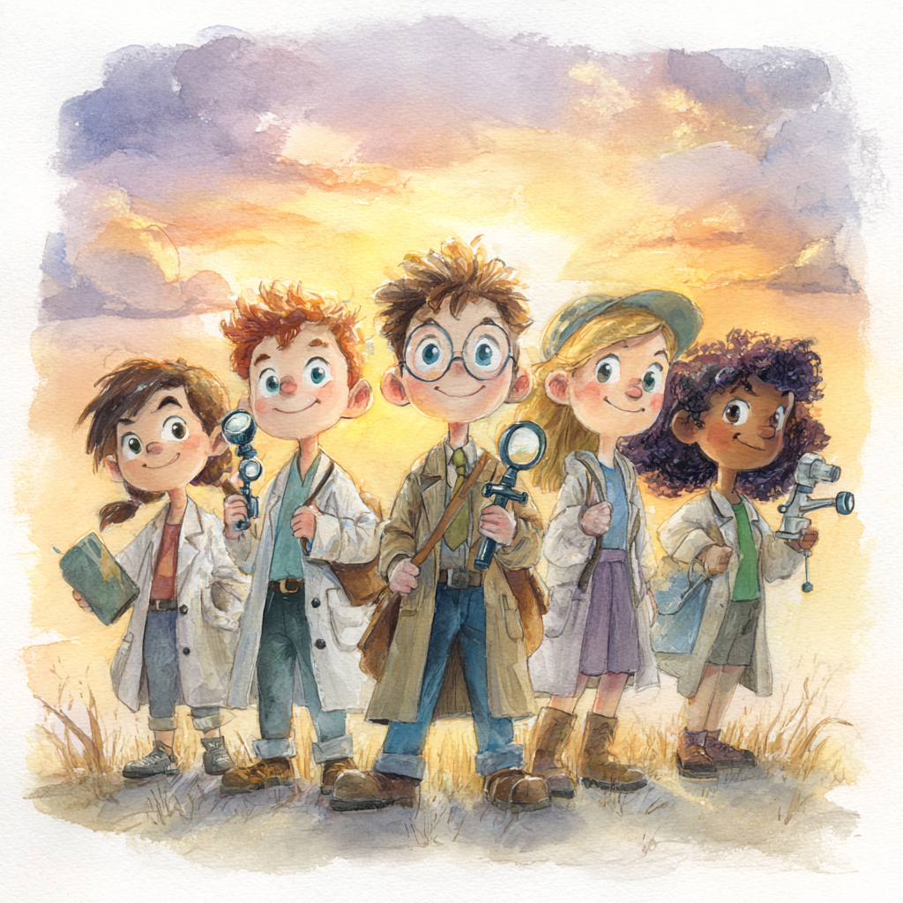

The Super Science Detective Story
Chapter 1: The Mystery of the Confusing Messages

Have you ever played the telephone game? You know, where one person whispers a message to the next person, and by the time it reaches the last person, the message has completely changed? Sometimes "I saw a big blue bird" becomes "My dad bought a weird burger"!
Well, imagine if this telephone game was happening all over the world, but instead of silly messages about birds and burgers, people were sharing important information about staying healthy during COVID-19. And just like in the telephone game, some of the messages got twisted, changed, or were just plain wrong!
During the COVID-19 pandemic, which happened a few years ago when you might have been younger, there was a lot of confusing information floating around. Some of it was true and helpful, but some of it was "misinformation" – which is just a fancy word for information that isn't correct, even if the person sharing it thought it was true.
Chapter 2: What is Misinformation, Really?

Think of misinformation like a sneaky shapeshifter! It often looks just like real, true information, which makes it really tricky to spot. It's not always shared by people trying to be mean or trick others – sometimes people share wrong information because they genuinely believe it's true and want to help.
During COVID-19, misinformation included things like false cures (like thinking drinking lots of water every 15 minutes would protect you from getting sick) or wrong ideas about how the virus worked. Some people even tried dangerous things like using cleaning products to try to prevent getting sick, which actually made them more sick.
It's kind of like if someone told you that eating ice cream for breakfast every day would make you taller. It sounds nice (who doesn't want ice cream for breakfast?), but it's not based on real science!
Chapter 3: The Science Detectives

Now, here comes the exciting part! Scientists in Israel decided to become like super detectives. They wanted to solve a mystery: Do people who learn more about science get better at spotting fake information?
To solve this mystery, they talked to 500 grown-ups during COVID-19. They asked them about two tricky situations: "Would you send your child to a preschool where the teachers live in a place with lots of COVID-19 cases?" and "Would you visit your elderly grandparents during the pandemic?"
These were like real-life puzzles where people had to think carefully about what was safe and what wasn't, just like when you have to decide whether it's safe to cross the street or whether you should believe your friend when they say they can fly.
Chapter 4: The Amazing Discovery

Here's what the science detectives found, and it's pretty amazing:
Discovery #1: People who learned more science in school were much better at spotting fake information! Even if they didn't always follow the health recommendations exactly, they were less likely to believe or use wrong information when making their decisions.
It's like having special glasses that help you see through magic tricks – the more you learn about how science works, the better you get at spotting when something doesn't make sense.
Discovery #2: When something was really important to people personally, they thought more carefully about the information. For example, parents thought more deeply about information when it was about their own kids, and women thought more carefully about visiting elderly family members.
Chapter 5: The Two Different Ways Your Brain Works

The scientists discovered that our brains work in two different ways when we're trying to figure out if information is true:
The Quick Way (Peripheral Route): This is like when you're in a hurry and you just look at who's telling you something. If it's someone you like or trust, you might believe them without thinking too hard. It's fast, but sometimes you can get tricked!
The Careful Way (Central Route): This is like being a detective – you ask questions, look for evidence, and really think about whether something makes sense. It takes more effort, but you're much more likely to figure out what's really true.
The scientists found that people with more science education and people who really cared about the topic used the "careful way" more often. They asked better questions and thought more deeply about the information, even if they didn't always follow the recommendations in the end.
Chapter 6: Why This Matters for You

You might be thinking, "But I'm only 10! Why should I care about this?" Well, here's the cool thing: Scientists have found that kids around age 14 often start believing in conspiracy theories and fake information, which means the earlier you learn to be a good "information detective," the better prepared you'll be!
Plus, even though adults sometimes think kids believe everything they hear, research shows that even preschoolers are pretty good at spotting obviously fake things! But kids can be tricked when fake information looks really official or professional.
Think about it like this: if someone showed you a fake website that looked just like your school's website, but it said "No more homework ever!" you might want to believe it, but your detective brain should ask questions like "Is this really from my school? Does this seem too good to be true?"
Chapter 7: How to Be a Super Information Detective

Here are some amazing detective tools the scientists found that work:
- Ask "Who's telling me this?" Just like how you learned to check if sources are reliable, you can look up whether the person or website sharing information actually knows what they're talking about.
- Use your science knowledge! Every time you learn something new in science class – whether it's about how germs spread, how vaccines work, or why we need to eat healthy food – you're building your detective superpowers.
- Think about whether it makes sense. If someone tells you something that seems too amazing or terrible to be true, take a moment to think about it carefully.
- Care about getting the right answer. The scientists found that when people really cared about making a good decision, they were more likely to think carefully and spot fake information.
Chapter 8: The Happy Ending (That's Really a Beginning!)
The best part about this whole story is that it has a really hopeful message: Learning science doesn't just help you understand how the world works – it actually makes you better at thinking clearly about all kinds of information!
The scientists concluded that the goal shouldn't just be to make people follow rules, but to help them think clearly and make good decisions based on good information. It's like giving everyone a superpower to see through tricks and make better choices.
So the next time you're in science class learning about how plants grow, or how the weather works, or how your body fights off germs, remember: you're not just learning cool facts. You're training your brain to be an amazing information detective who can help make the world a little bit safer and smarter for everyone!
Fun Facts for Young Scientists
- Kids around age 14 often start believing in conspiracy theories and fake information
- Even preschoolers are pretty good at spotting obviously fake things!
- People with more science education are much better at spotting fake information
- When something is personally important to you, you think more carefully about information
What You Can Do
- Ask "Who's telling me this?" when you see surprising information
- Use your science knowledge to check if things make sense
- Think carefully about information that seems too amazing or terrible to be true
- Remember that learning science gives you super detective powers!